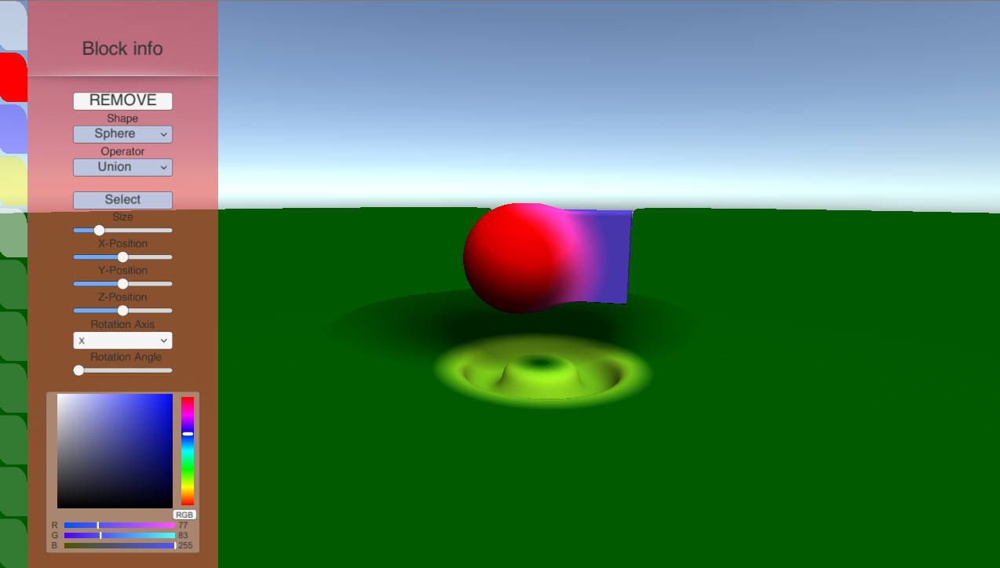

Manuale Utente
Per iniziare l utente deve premere una delle TAB evidenziate, è possibile spostare la telecamera attorno al punto 0,0,0 tenendo premuto con il tasto destro del mouse e spostando il mouse.
World Settings

Valori legati alla tecnica di raymarching della scena
Camera Distance: distanza della camera dal punto 0,0,0 del mondo.
Precision, cioè la precisione dell'algoritmo a delineare i bordi della forma.
Smoothness: determina il grado di smoothness degli operatori, quanto viene arrotondato il bordo in cui due figure interagiscono.
Max Distance: fino a quanto lontano può arrivare il raggio, definisce la distanza massima degli oggetti renderizzati, quindi oggetti troppo lontani non vengono renderizzati
Max Steps: quanto l'algoritmo può far avanzare il raggio
Plane: crea un piano orizzontale sul punto 0,0,0
Block Settings

- ADD: Premendo ADD viene generata una figura di default nel punto 0,0,0, di forma sferica di colore rosso

REMOVE: Premendo REMOVE la figura viene rimossa dalla scena e con lei le impostazioni di quella figura
Shape: dalla tendina è possibile modificare la forma della figura a schermo, da sfera a cubo a toro.
Operator: dalla tendina è possibile modificare l operatore con la quale la figura interagisce con le altre.
- Union le figure si uniscono tra loro
- Subtraction la figura sovrapposta elimina la parte sovrapposta sull'altra figura.
- Intersection il risultato della scena è la sovrapposizione di tutte le figure nella scena, quindi l'intersezione tra le figure.
Select: pulsante che applica un outline sulla figura nella scena per evidenziarla dagli altri
Size: permette di scegliere la dimensione della figura
Z-Position: permette di definire la profondità nello spazio
Rotation Angle: permette di definire l angolo di rotazione della figura sull asse di rotazione scelta
Rotation Axis: permette di definire mediante le opzioni nella tendina l'asse su cui applicare la rotazione su quella figura
Color: si può definire quale colore usare sulla figura
Si può spostare la figura cliccandola con il tasto sinistro del mouse facendo drag and drop.